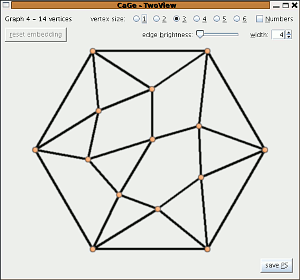
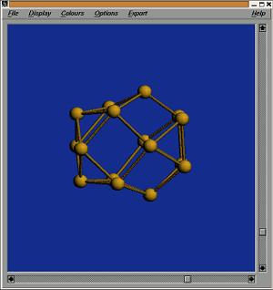

The 4-regular plane graphs windows
4-regular plane graphs are plane graphs where every vertex has exactly 4 neighbours. 4-regular graphs are sometimes also called "quartic" graphs. There are 2 different interfaces that allow to further specify the class of graphs that shall be generated.
All face sizes allowed
In this section one can generate 4-regular plane graphs with a given number of vertices. Furthermore one of the following three properties must be chosen:
- 3-connected
- 4-edge-connected
- 3-connected and cyclically 6-edge connected
A program for the generation of 4-regular plane graphs with 1- or 2-cuts will be future work.

Quartic graphs with given face sizes
Just like for the case of cubic plane graphs with given face sizes) you can specify which face sizes may occur in the generated graphs.
The generator used in this part is designed for the case of relatively many face sizes allowed and does not allow extra options. For the future a reimplementation of the algorithm described in Discr. Appl. Math. 128, pages 541-554 is planned. This will be applied in the case of few face sizes allowed.

| choosing
a generator window |
||
| the
3-regular plane graphs windows |
||